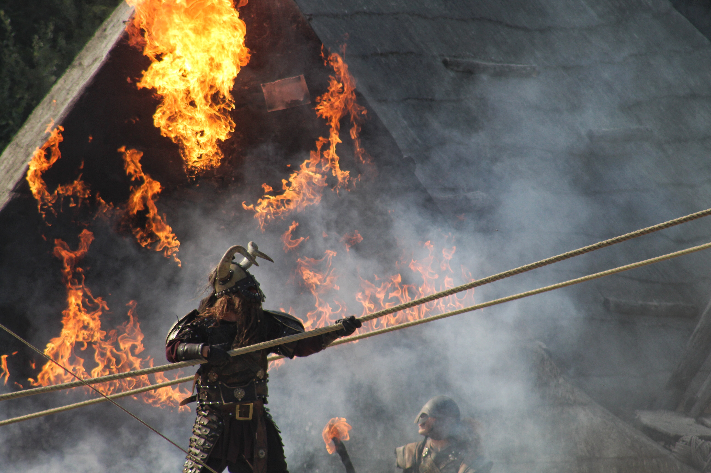

VIKINGOS
Los guerreros más temidos de la historia

Algunas características...
- No temian a la muerte, sino que ese era su objetivo, morir en batalla.
- No importaba si eras hombre, mujer o niño, si tenian que luchar, lo hacian
- Creian e múltiples dioses, como Odin, Thor, Loki...
Para más información...
Vikingos